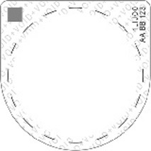

FZV
Ausfertigungsdatum: 20.07.2023
Vollzitat:
"Fahrzeug-Zulassungsverordnung vom 20. Juli 2023 (BGBl. 2023 I Nr. 199, S. 2), die zuletzt durch Artikel 23 der Verordnung vom 11. Dezember 2024 (BGBl. 2024 I S. 411) geändert worden ist"
| Stand: | Zuletzt geändert durch Art. 23 V v. 11.12.2024 I 411 |
| Ersetzt V 9232-14 v. 3.2.2011 I 139 (FZV 2011) | |
(+++ Textnachweis ab: 1.9.2023 +++)
Die V wurde als Artikel 1 der V v. 20.7.2023 I Nr. 199 vom Bundesministerium
für Digitales und Verkehr, vom Bundesministerium für Umwelt, Naturschutz,
nukleare Sicherheit und Verbraucherschutz, vom Bundesministerium des Innern
und für Heimat und vom Bundesministerium der Finanzen mit Zustimmung des
Bundesrates und im Einvernehmen mit dem Bundesministerium der Justiz und dem
Bundesministerium für Wirtschaft und Klimaschutz beschlossen. Sie ist gem.
Art. 13 Satz 1 dieser V am 1.9.2023 in Kraft getreten.
| § 1 | Anwendungsbereich |
| § 2 | Begriffsbestimmungen |
| § 3 | Notwendigkeit einer Zulassung |
| § 4 | Voraussetzungen für die Inbetriebsetzung eines zulassungsfreien Fahrzeuges |
| § 5 | Beschränkung und Untersagung des Betriebs von Fahrzeugen |
| § 6 | Antrag auf Zulassung |
| § 7 | Tageszulassung |
| § 8 | Zulassung in der Bundesrepublik Deutschland nach vorheriger Zulassung in einem anderen Staat |
| § 9 | Zuteilung von Kennzeichen |
| § 10 | Besondere Kennzeichen |
| § 11 | Kennzeichnung elektrisch betriebener Fahrzeuge |
| § 12 | Ausgestaltung und Anbringung der Kennzeichen |
| § 13 | Zulassungsbescheinigung Teil I |
| § 14 | Zulassungsbescheinigung Teil II |
| § 15 | Mitteilungspflichten bei Änderungen |
| § 16 | Außerbetriebsetzung, Wiederzulassung |
| § 17 | Verwertungsnachweis |
| § 18 | Zulässigkeit internetbasierter Zulassungsverfahren |
| § 19 | Portal |
| § 20 | Antrag |
| § 21 | Sicherheitscodes |
| § 22 | Nachweis der Hauptuntersuchungen und der Sicherheitsprüfungen nach § 29 der Straßenverkehrs-Zulassungs-Ordnung |
| § 23 | Bekanntgabe und Wirksamkeit der Entscheidung sowie Vorbehalt der Nachprüfung |
| § 24 | Antrag auf Außerbetriebsetzung |
| § 25 | Außerbetriebsetzung |
| § 26 | Gemeinsame Regelungen für die Zulassung und für Änderungen |
| § 27 | Internetbasierte Erstzulassung |
| § 28 | Internetbasierte Tageszulassung |
| § 29 | Internetbasierte Wiederzulassung |
| § 30 | Internetbasierte Änderung bei Halter- oder Wohnsitzwechsel, sofortige Inbetriebsetzung |
| § 31 | Zulässigkeit der sofortigen Inbetriebsetzung |
| § 32 | Vorläufiger Zulassungsnachweis |
| § 33 | Großkundenschnittstelle |
| § 34 | Registrierung als Großkunde |
| § 35 | Identifizierungsmerkmal |
| § 36 | Überprüfung der Voraussetzungen und Widerruf der Registrierung als Großkunde |
| § 37 | Antragstellung über die Großkundenschnittstelle |
| § 38 | Übermittlung eines Antrags an die Zulassungsbehörde und automatische Ergänzung erforderlicher Daten |
| § 39 | Bekanntgabe und Wirksamkeit der Entscheidung der Zulassungsbehörde |
| § 40 | Sofortige Inbetriebsetzung nach Entscheidung der Zulassungsbehörde |
| § 41 | Prüfungsfahrten, Probefahrten und Überführungsfahrten mit rotem Kennzeichen |
| § 42 | Probefahrten und Überführungsfahrten mit Kurzzeitkennzeichen |
| § 43 | Fahrten zur Teilnahme an Veranstaltungen für Oldtimer |
| § 44 | Fahrten im internationalen Verkehr |
| § 45 | Fahrten zur dauerhaften Verbringung eines Fahrzeuges in das Ausland |
| § 46 | Vorübergehende Teilnahme am Straßenverkehr in der Bundesrepublik Deutschland |
| § 47 | Kennzeichen und Unterscheidungszeichen |
| § 48 | Beschränkung und Untersagung des Betriebs ausländischer Fahrzeuge |
| § 49 | Versicherungsnachweis |
| § 50 | Mitteilungspflichten der Zulassungsbehörde |
| § 51 | Maßnahmen und Pflichten bei fehlendem Versicherungsschutz |
| § 52 | Versicherungskennzeichen |
| § 53 | Ausgestaltung und Anbringung des Versicherungskennzeichens |
| § 54 | Rote Versicherungskennzeichen |
| § 55 | Maßnahmen bei vorzeitiger Beendigung des Versicherungsverhältnisses |
| § 56 | Versicherungsplakette |
| § 57 | Erhebung und Speicherung der Fahrzeugdaten im Zentralen Fahrzeugregister |
| § 58 | Erhebung und Speicherung der Fahrzeugdaten im örtlichen Fahrzeugregister |
| § 59 | Erhebung und Speicherung der Halterdaten in den Fahrzeugregistern |
| § 60 | Übermittlung von Daten an das Kraftfahrt-Bundesamt |
| § 61 | Übermittlung, Erhebung und Speicherung der Daten über Hauptuntersuchungen und Sicherheitsprüfungen im Zentralen Fahrzeugregister |
| § 62 | Übermittlung von Daten an die Versicherer |
| § 63 | Mitteilungen an die Finanzbehörden |
| § 64 | Übermittlung von Daten an Stellen zur Durchführung des Bundesleistungsgesetzes, des Verkehrssicherstellungsgesetzes, des Verkehrsleistungsgesetzes und von Maßnahmen des Katastrophenschutzes |
| § 65 | Übermittlungen des Kraftfahrt-Bundesamtes an die Zulassungsbehörden |
| § 66 | Abruf im automatisierten Verfahren |
| § 67 | Automatisiertes Anfrage- und Auskunftsverfahren |
| § 68 | Sicherung des Abrufverfahrens gegen Missbrauch |
| § 69 | Aufzeichnung der Abrufe im automatisierten Verfahren |
| § 70 | Abruf im automatisierten Verfahren durch ausländische Stellen |
| § 71 | Übermittlungssperren |
| § 72 | Löschung von Daten aus dem Zentralen Fahrzeugregister |
| § 73 | Löschung von Daten aus dem örtlichen Fahrzeugregister |
| § 74 | Zentrale Datenbank der Übereinstimmungsbescheinigungen |
| § 75 | Zuständigkeiten |
| § 76 | Ausnahmen |
| § 77 | Ordnungswidrigkeiten |
| § 78 | Verweis auf technische Regelwerke |
| § 79 | Übergangs- und Anwendungsbestimmungen |
| Anlage 1 | Ausgestaltung, Einteilung und Zuteilung der Buchstaben- und Zahlengruppen für die Erkennungsnummern der Kennzeichen |
| Anlage 2 | Unterscheidungszeichen der Fahrzeuge der Bundes- und Landesorgane, der Bundesministerien, der Bundesfinanzverwaltung, der Bundespolizei, der Wasserstraßen- und Schifffahrtsverwaltung des Bundes, der Bundesanstalt Technisches Hilfswerk, der Bundeswehr, des Diplomatischen Corps und bevorrechtigter internationaler Organisationen |
| Anlage 3 | Plakettenmuster für elektrisch betriebene Fahrzeuge |
| Anlage 4 | Ausgestaltung der Kennzeichen |
| Anlage 5 | Stempelplaketten und Plakettenträger |
| Anlage 6 | Zulassungsbescheinigung Teil I |
| Anlage 7 | Zulassungsbescheinigung Teil I für Fahrzeuge der Bundeswehr |
| Anlage 8 | Zulassungsbescheinigung Teil II |
| Anlage 9 | Verwertungsnachweis |
| Anlage 10 | Verifizierung der Prüfziffer |
| Anlage 11 | Verifizierung und Verarbeitung der Daten für internetbasierte Zulassungsverfahren |
| Anlage 12 | Bevollmächtigung eines Großkunden zur Antragstellung bei der Zulassungsbehörde mithilfe der beim Kraftfahrt-Bundesamt vorhandenen Großkundenschnittstelle |
| Anlage 13 | Fahrzeugscheinheft für Fahrzeuge mit rotem Kennzeichen |
| Anlage 14 | Fahrzeugschein für Fahrzeuge mit Kurzzeitkennzeichen |
| Anlage 15 | Fahrzeugscheinheft für Oldtimerfahrzeuge mit rotem Kennzeichen |
| Anlage 16 | Bestätigung über eine dem Gesetz über die Haftpflichtversicherung für ausländische Kraftfahrzeuge und Kraftfahrzeuganhänger entsprechende Haftpflichtversicherung |
| Anlage 17 | Versicherungskennzeichen für Kleinkrafträder, motorisierte Krankenfahrstühle und leichte vierrädrige Kraftfahrzeuge |
| Anlage 18 | Versicherungsplakette für Elektrokleinstfahrzeuge |
| BD | Dienstfahrzeuge des Bundestages, des Bundesrates, des Bundespräsidialamtes, der Bundesregierung, der Bundesministerien, der Bundesfinanzverwaltung, des Bundesverfassungsgerichts und des Bundeskriminalamtes (Zulassungsbehörde Berlin; Zulassungsbehörde Bonn, Stadt; für BD 8 und 16 Kfz-Zulassungsstelle bei der „Generalzolldirektion“ – Dienstort Offenbach) |
| BG | Dienstfahrzeuge der Bundespolizei (Kfz-Zulassungsstelle beim „Beschaffungsamt des Bundesministeriums des Innern“ in Bonn als zentrale Zulassungsbehörde) (noch gültig, wird nicht mehr zugeteilt) |
| BP | Dienstfahrzeuge der Bundespolizei (Kfz-Zulassungsstelle beim „Beschaffungsamt des Bundesministeriums des Innern“ in Bonn als zentrale Zulassungsbehörde) |
| BW | Bundes-Wasserstraßen- und Schifffahrtsverwaltung (Generaldirektion Wasserstraßen und Schifffahrt) |
| THW | Dienstfahrzeuge der Bundesanstalt Technisches Hilfswerk (Kfz-Zulassungsstelle beim „Beschaffungsamt des Bundesministeriums des Innern“ in Bonn als zentrale Zulassungsbehörde) |
| Y | Dienstfahrzeuge der Bundeswehr (Zentrale Militärkraftfahrtstelle – ZMK, Hardter Straße 9, 41179 Mönchengladbach/Rheindahlen) |
| X | Dienstfahrzeuge der auf Grund des Nordatlantikvertrages errichteten internationalen militärischen Hauptquartiere, die ihren regelmäßigen Standort in der Bundesrepublik Deutschland haben (Zentrale Militärkraftfahrtstelle – ZMK, Hardter Straße 9, 41179 Mönchengladbach/Rheindahlen) |
| B | Berlin Senat und Abgeordnetenhaus (Zulassungsbehörde Berlin) |
| BBL | Brandenburg Landesregierung, Landtag und Polizei (Zulassungsbehörde Potsdam, Stadt; für die Polizei Innenministerium Zentraldienst der Polizei Brandenburg) |
| BWL | Baden-Württemberg Landesregierung, Landtag und Polizei (Zulassungsbehörde Stuttgart, Stadt; für die Polizei Innenministerium Baden-Württemberg – Landespolizeipräsidium) |
| BYL | Bayern Landesregierung und Landtag (Zulassungsbehörde München, Stadt) |
| HB | Freie Hansestadt Bremen Senat und Bürgerschaft (Zulassungsbehörde Bremen, Stadt) |
| HEL | Hessen Landesregierung und Landtag (Zulassungsbehörde Wiesbaden, Stadt) |
| HH | Freie und Hansestadt Hamburg Senat und Bürgerschaft (Zulassungsbehörde Hamburg, Stadt) |
| LSA | Sachsen-Anhalt Landesregierung, Landtag und Polizei (Zulassungsbehörde Magdeburg, Stadt) |
| LSN | Sachsen Landesregierung und Landtag (Zulassungsbehörde Dresden, Stadt) |
| MVL | Mecklenburg-Vorpommern Landesregierung (einschließlich Landespolizei) und Landtag (Zulassungsbehörde Schwerin, Stadt) |
| NL | Niedersachsen Landesregierung und Landtag (Zulassungsbehörde Hannover, Stadt) |
| NRW | Nordrhein-Westfalen Landesregierung, Landtag und Polizei (Zulassungsbehörde Düsseldorf, Stadt; für die Polizei Landesamt für Zentrale Polizeiliche Dienste des Landes NRW, Duisburg) |
| RPL | Rheinland-Pfalz Landesregierung, Landtag und Polizei (Zulassungsbehörde Mainz, Stadt) |
| SAL | Saarland Landesregierung, Landtag und Polizei (Zulassungsbehörde Stadt Saarbrücken, Stadt und Regionalverband; für die Polizei Landespolizeipräsidium – Direktion LPP 4 Zentrale Dienste – LPP 4.8 Kraftfahrzeugtechnik) |
| SH | Schleswig-Holstein Landesregierung, Landtag und Polizei (Zulassungsbehörde Kiel, Stadt) |
| THL | Thüringen Landesregierung und Landtag (Zulassungsbehörde Erfurt, Stadt) |
| 0, B oder BN | Diplomatische Vertretungen oder internationale Organisationen und in Abhängigkeit vom Status der bevorrechtigten Person (Zulassungsbehörde Berlin, Zulassungsbehörde Bonn, Stadt) |
| Unterscheidungszeichen des Verwaltungsbezirkes am Sitz des Konsulats | Berufskonsularische Vertretungen und in Abhängigkeit vom Status der bevorrechtigten Person (Zulassungsbehörde am Sitz des Konsulats) |
| 1-1 | Dienstkraftwagen des Präsidenten des Deutschen Bundestages (Zulassungsbehörde Berlin) |
| Durchmesser: | 80 mm, schwarz umrandet (RAL 9005), Strichdicke der Umrandung 1,5 mm; |
| Schrift: | E, Höhe 35 mm, DIN 1451, Mittelschrift 138 pt (RAL 9005), Kippfarbe als sichtbares Echtheitsmerkmal, Schriftfeld (60 x 20 mm, RAL 9010 reinweiß, schwarz umrandet, Konturlinie 0,5 mm) zum Eintrag des Fahrzeugkennzeichens mittels lichtechter Schrift Individualisierungsmerkmal Durchmesser 20 mm; |
| Plakettenfarbe: | blau RAL 5017 Verkehrsblau nach Register RAL 840-HR; |
| Siegelfeld: | rund, 2/3 Kreis, reinweiß RAL 9010, schwarz umrandet, Konturlinie 0,5 mm, Siegeldruck rund, Durchmesser 20 mm; |
| Abbildung: | ![Das Plakettenmuster für elektrisch betriebene Fahrzeuge ist rund und hat einen Durchmesser von 8 mm. Es ist schwarz umrandet (RAL 9005). In der oberen Hälfte steht der Großbuchstabe E. Der Buchstabe ist schwarz und hat eine Höhe von 35 mm, in Mittelschrift 138 pt (RAL 9005). Darunter befindet sich ein rechteckiges weißes Schriftfeld und ein rundes weißes Siegelfeld. Links neben dem Buchstaben E ist die Abbildung eines kleinen grünlich schimmernden Fahrzeugs enthalten, aus dem ein Ladekabel rechtseitig herausragt.](../normengrafiken/bgbl1_2023/j01990_0010.jpg) |


![Es wird beispielhaft ein einzeiliges Kennzeichen nebst Bemaßung dargestellt. Das Kennzeichen weist ein Größtmaß von 520 mm auf und ist 110 mm hoch. Die Ecken sind abgerundet. Der Rand des Kennzeichens ist schwarz. An der linken Seite des Kennzeichens befindet sich ein Eurofeld, wie bereits zuvor beschrieben. Rechts daneben sind die Buchstaben HH in schwarzer Mittelschrift, wie bereits zuvor beschrieben, abgebildet. Das Mindestmaß für den Abstand zwischen dem Eurofeld und den Buchstaben HH beträgt 8 mm. Neben des Buchstaben HH sind die vorgesehenen Felder für die Plaketten abgebildet. Die Felder für die Plakette sind rund. Da kleinere mit einem Durchmesser von 35 mm ist oberhalb des größeren angesiedelt, welches einen Durchmesser von 45 mm hat. Rechts daneben sind die Buchstaben HU in schwarzer Mittelschrift, wie bereits zuvor beschrieben, abgebildet. Der Abstand zwischen den Buchstaben H und U beträgt zwischen 8 bis 10 mm. In einem Abstand von 24 bis 30 mm schließt sich Zahlenfolge 199 in schwarzer Mittelschrift an. Der Abstand zwischen den einzelnen Ziffern dieser Zahlenfolge beträgt ebenfalls zwischen 8 bis 10 mm.](../normengrafiken/bgbl1_2023/j01990_0110.jpg)
![Es wird beispielhaft ein zweizeiliges Kennzeichen nebst Bemaßung dargestellt. Das Kennzeichen weist ein Größtmaß von 340 mm auf und ist 200 mm hoch. Das Größtmaß beträgt bei zwei- und dreirädrigen Kraftfahrzeugen 280 mm. Die Ecken des Kennzeichens sind abgerundet. Der Rand des Kennzeichens ist schwarz. In der ersten Zeile an der linken oberen Seite des Kennzeichens befindet sich ein Euro-Feld, wie bereits zuvor beschrieben. Rechts daneben in einem Abstand von mindestens 8 mm sind die Buchstaben HH in schwarzer Mittelschrift, wie bereits zuvor beschrieben, abgebildet. Das Mindestmaß für den Abstand zwischen dem Eurofeld und den Buchstaben HH beträgt 8 mm. Neben den Buchstaben HH sind die vorgesehenen Felder für die Plaketten abgebildet, wie zuvor beschrieben, abgebildet. Das kleinere mit einem Durchmesser von 35 mm ist oberhalb des größeren angesiedelt, welches einen Durchmesser von 45 mm hat. In der zweiten Zeile mit einem Mindestabstand von 8 mm schließen sich die Buchstaben HU in schwarzer Mittelschrift, wie bereits zuvor beschrieben, an. Der Abstand zwischen den Buchstaben H und U beträgt zwischen 8 bis 10 mm. In einem Abstand von 24 bis 30 mm schließt sich Zahlenfolge 199 in schwarzer Mittelschrift an. Der Abstand zwischen den einzelnen Ziffern dieser Zahlenfolge beträgt ebenfalls zwischen 8 bis 10 mm.](../normengrafiken/bgbl1_2023/j01990_0120.jpg)
![Es wird beispielhaft ein Kraftradkennzeichen nebst Bemaßung dargestellt. Das Kennzeichen weist ein Mindestmaß von 180 mm und ein Größtmaß von 340 mm auf und ist 200 mm hoch. Die Ecken des Kennzeichens sind abgerundet. Der Rand des Kennzeichens ist schwarz. In der ersten Zeile an der linken oberen Seite des Kennzeichens befindet sich ein Euro-Feld, wie bereits zuvor beschrieben. Rechts daneben in einem Abstand von mindestens 8 mm sind die Buchstaben EBE in schwarzer Mittelschrift, wie bereits zuvor beschrieben, abgebildet. Das Mindestmaß für den Abstand zwischen dem Eurofeld und den Buchstaben EBE beträgt 8 mm. Unterhalb der Buchstaben EBE sind die vorgesehenen Felder für die Plaketten, wie zuvor beschrieben, abgebildet. Das kleinere mit einem Durchmesser von 35 mm ist linksseitig des größeren angesiedelt, welches einen Durchmesser von 45 mm hat. In der nächsten Zeile mit einem Mindestabstand von 8 mm schließen sich die Buchstaben VM in schwarzer Mittelschrift, wie bereits zuvor beschrieben, an. Der Abstand zwischen den Buchstaben V und M beträgt zwischen 8 bis 10 mm. In einem Abstand von 15 bis 18 mm schließt sich Zahlenfolge 71 in schwarzer Mittelschrift an. Der Abstand zwischen den einzelnen Ziffern dieser Zahlenfolge beträgt ebenfalls zwischen 8 bis 10 mm.](../normengrafiken/bgbl1_2023/j01990_0130.jpg)
![Es wird beispielhaft ein verkleinertes zweizeiliges Kennzeichen nebst Bemaßung dargestellt. Das Kennzeichen weist ein Größtmaß von 255 mm auf und ist 130 mm hoch. Die Ecken des Kennzeichens sind abgerundet. Der Rand des Kennzeichens ist schwarz. In der ersten Zeile an der linken oberen Seite des Kennzeichens befindet sich ein Euro-Feld, wie bereits zuvor beschrieben. Rechts daneben in einem Abstand von mindestens 8 mm sind die Buchstaben HVL in schwarzer Mittelschrift, wie bereits zuvor beschrieben, abgebildet. Das Mindestmaß für den Abstand zwischen dem Eurofeld und den Buchstaben beträgt 8 mm. Neben den Buchstaben HVL ist in einem Abstand von 5 bis 20 mm das kleinere Feld für die Plakette mit einem Durchmesser von 35 mm abgebildet. Das größere Feld für die Plakette mit einem Durchmesser von 45 mm befindet sich unterhalb des kleineren am Ende der zweiten Zeile. In der zweiten Zeile mit einem Mindestabstand von 8 mm schließt sich der Buchstabe D in schwarzer Mittelschrift, wie bereits zuvor beschrieben, an. In einem Abstand von 15 bis 18 mm schließt sich Zahlenfolge 191 in schwarzer Mittelschrift an. Der Abstand zwischen den einzelnen Ziffern dieser Zahlenfolge beträgt zwischen 8 bis 10 mm. Daneben befindet sich in einem Abstand von 5 bis 20 mm das Plakettenfeld mit dem Durchmesser von 45 mm.](../normengrafiken/bgbl1_2023/j01990_0140.jpg)
![Es wird beispielhaft ein Wechselkennzeichen dargestellt. Das Kennzeichen besteht aus zwei Teilen, einem gemeinsamen Kennzeichenteil und einem fahrzeugbezogenen Teil. Das Größtmaß für beide Teile beträgt 520 mm. Der abgebildete gemeinsame Kennzeichenteil hat einen schwarzen Rand mit abgerundeten Kanten. Innerhalb des Kennzeichens sind von links nach rechts das Eurofeld, die Buchstaben OHZ und das Feld für die Stempelplakette angebracht. Oberhalb des Feldes für die Stempelplakette befindet sich die Kennzeichnung W. Nachfolgend sind die Buchstaben AB und die Ziffern 1 und 0 abgebildet. Die übrigen Abmessungen des dargestellten gemeinsamen Kennzeichenteils entsprechen denen der allgemeinen Kennzeichen. Daneben befinden sich zwei beispielhafte Abbildungen eines kurzen fahrzeugbezogenen Kennzeichenteils mit teilweiser Bemaßung. Dieses ist ebenso hoch wie der gemeinsame Kennzeichenteil und 60 mm breit. Die Ecken sind abgerundet. Der Rand des kurzen fahrzeugbezogenen Kennzeichenteils ist schwarz. Auf der ersten Abbildung des kurzen fahrzeugbezogenen Kennzeichenteils ist das Feld für die HU-Plakette angebracht. Darunter sind die Zeichen 2 H abgebildet. Unterhalb dessen ist in kleiner Schrift die Zeichenkombination OMZAB10 abgebildet. Die zweite Abbildung des kurzen fahrzeugbezogenen Kennzeichenteils ist identisch, mit dem Unterschied, dass unterhalb des Feldes für die HU-Plakette nur die Ziffer 2 abgebildet ist. Unterhalb dessen ist in kleiner Schrift die Zeichenkombination OMZAB10 abgebildet.](../normengrafiken/bgbl1_2023/j01990_0150.jpg)
![Es wird beispielhaft ein zweizeiliges Wechselkennzeichen dargestellt. Das Kennzeichen besteht aus zwei Teilen, einem gemeinsamen Kennzeichenteil und einem fahrzeugbezogenen Teil. Das Größtmaß für beide Teile beträgt 340 mm. Der abgebildete gemeinsame Kennzeichenteil hat einen schwarzen Rand mit abgerundeten Kanten. Innerhalb des Kennzeichens sind in einer ersten Zeile von links nach rechts das Eurofeld, die Buchstaben OHZ und das Feld für die Stempelplakette angebracht. Oberhalb des Feldes für die Stempelplakette befindet sich die Kennzeichnung W. Nachfolgend sind in der zweiten Zeile die Buchstaben CD und die Ziffern 1 und 0 abgebildet. Die übrigen Abmessungen des dargestellten gemeinsamen Kennzeichenteils entsprechen denen der allgemeinen Kennzeichen. Daneben befinden sich zwei beispielhafte Abbildungen eines kurzen fahrzeugbezogenen Kennzeichenteils mit teilweiser Bemaßung. Dieses ist ebenso hoch wie der gemeinsame Kennzeichenteil und 60 mm breit. Die Ecken sind abgerundet. Der Rand des kurzen fahrzeugbezogenen Kennzeichenteils ist schwarz. Auf der ersten Abbildung des kurzen fahrzeugbezogenen Kennzeichenteils ist das Feld für die HU-Plakette angebracht. Darunter ist die Ziffer 1 abgebildet. Unterhalb dessen ist in kleiner Schrift die Zeichenkombination OMZCD10 abgebildet. Die zweite Abbildung des kurzen fahrzeugbezogenen Kennzeichenteils ist identisch, mit dem Unterschied, dass unterhalb des Feldes für die HU-Plakette die Ziffer 2 und die Zahl 1 und der Buchstabe H abgebildet sind. Unterhalb dessen ist in kleiner Schrift die Zeichenkombination OMZCD10 abgebildet.](../normengrafiken/bgbl1_2023/j01990_0160.jpg)
![Es wird beispielhaft ein Kraftradkennzeichen in der Ausgestaltung als Wechselkennzeichen dargestellt. Das Kennzeichen besteht aus zwei Teilen, einem gemeinsamen Kennzeichenteil und einem fahrzeugbezogenen Teil. Das Mindestmaß beträgt 180 mm und das Größtmaß für beide Teile beträgt 240 mm. Der abgebildete gemeinsame Kennzeichenteil hat einen schwarzen Rand mit abgerundeten Kanten. Innerhalb des Kennzeichens sind in einer ersten Zeile von links nach rechts das Eurofeld, die Buchstaben OHZ abgebildet. Darunter befindet sich das Feld für die Stempelplakette und rechts daneben die Kennzeichnung W. Nachfolgend sind in der zweiten Zeile die Buchstaben EF und die Ziffern 1 und 0 abgebildet. Die übrigen Abmessungen des dargestellten gemeinsamen Kennzeichenteils entsprechen denen der Kraftradkennzeichen. Daneben befinden sich zwei beispielhafte Abbildungen eines kurzen fahrzeugbezogenen Kennzeichenteils mit teilweiser Bemaßung. Dieses ist ebenso hoch wie der gemeinsame Kennzeichenteil und 60 mm breit. Die Ecken sind abgerundet. Der Rand des kurzen fahrzeugbezogenen Kennzeichenteils ist schwarz. Auf der ersten Abbildung des kurzen fahrzeugbezogenen Kennzeichenteils ist das Feld für die HU-Plakette angebracht. Darunter ist die Ziffer 1 abgebildet. Unterhalb dessen ist in kleiner Schrift die Zeichenkombination OMZEF10 abgebildet. Die zweite Abbildung des kurzen fahrzeugbezogenen Kennzeichenteils ist identisch, mit dem Unterschied, dass unterhalb des Feldes für die HU-Plakette die Ziffer 1 und der Buchstabe H abgebildet ist. Unterhalb dessen ist in kleiner Schrift die Zeichenkombination OMZEF10 abgebildet.](../normengrafiken/bgbl1_2023/j01990_0170.jpg)
![Es wird beispielhaft das Kennzeichen der Bundeswehr für Leichtkrafträder und Kleinkrafträder mit Bemaßung dargestellt. Dieses hat ein Größtmaß von 240 mm und ist 130 mm hoch. Es hat einen schwarzen Rand, der leicht abgerundet ist. Auf der rechten Seite ist in einem Abstand von 10 mm zum rechten Rand und in einem Abstand von 31 mm zum oberen und unteren Rand die deutsche Flagge dargestellt. Diese ist 35 mm breit und die einzelnen 3 Balken der Flagge sind jeweils 20 mm hoch. In einem Abstand von 10 mm dazu folgt in der ersten oberen Zeile des Kennzeichens der Buchstabe Y, gefolgt von einem 25 mm langen Bindestrich, unter dem ein Feld für die Stempelplakette abgebildet ist. Das Feld für die Stempelplakette hat einen Durchmesser von 35 mm. Links daneben folgen die Zahlen 2 und 3. In der zweiten Zeile sind von links nach rechts die Zahlen 4, 5, 6 und 7 angeordnet. Die Zahlen haben jeweils eine Höhe von 49 mm und eine Breite vom 28 mm. Die Abstände zwischen den einzelnen Zahlen betragen jeweils 16 mm.](../normengrafiken/bgbl1_2023/j01990_0180.jpg)
![Es wird beispielhaft das Kennzeichen der Bundeswehr für Kleinkrafträder mit Bemaßung dargestellt. Dieses hat ein Größtmaß von 160 mm. Es hat einen schwarzen Rand, der leicht abgerundet ist. Auf der unteren rechten Seite ist die deutsche Flagge dargestellt. Diese ist 18 mm breit und die einzelnen 3 Balken der Flagge sind jeweils 18 mm hoch. In der ersten oberen Zeile des Kennzeichens folgt der Buchstabe Y, gefolgt von den Zahlen 2 und 3, abgebildet. In der zweiten Zeile sind von links nach rechts die Zahlen 4, 5 und 6 angeordnet.](../normengrafiken/bgbl1_2023/j01990_0190.jpg)
![Es wird beispielhaft das Kennzeichen der Bundeswehr für andere Krafträder mit Bemaßung dargestellt. Dieses hat ein Größtmaß von 280 mm. Es hat einen schwarzen Rand, der leicht abgerundet ist. Auf der rechten Seite ist die deutsche Flagge dargestellt. Die einzelnen 3 Balken der Flagge sind jeweils 25 mm hoch. In einem Abstand von 17 mm dazu folgt in der ersten oberen Zeile des Kennzeichens der Buchstabe Y, gefolgt von einem 25 mm langen Bindestrich, unter dem ein Feld für die Stempelplakette abgebildet ist. Das Feld für die Stempelplakette hat einen Durchmesser von 35 mm. Links daneben folgen die Zahlen 2 und 3. In der zweiten Zeile sind von links nach rechts die Zahlen 4, 5,6 und 7 angeordnet.](../normengrafiken/bgbl1_2023/j01990_0200.jpg)
![Es wird beispielhaft das einzeilige Kennzeichen der Bundeswehr für andere Kraftfahrzeuge und Anhänger mit Bemaßung dargestellt. Dieses hat ein Größtmaß von 520 mm. Es hat einen schwarzen Rand, der leicht abgerundet ist. Auf der unteren rechten Seite ist die deutsche Flagge mit einer Breite von 60 mm dargestellt. Die einzelnen 3 Balken der Flagge sind jeweils 20 mm hoch. In einem Abstand von 10 mm dazu folgt in der ersten oberen Zeile des Kennzeichens der Buchstabe Y, gefolgt von einem 25 mm langen Bindestrich, unter dem ein Feld für die Stempelplakette abgebildet ist. Links daneben folgen die Zahlen 2 bis 4 in einem Abstand von 10 mm zueinander. In einem größeren Abstand dazu schließen sich die Zahlen 5 bis 7 ebenfalls mit einem Abstand von 10 mm zueinander an.](../normengrafiken/bgbl1_2023/j01990_0210.jpg)
![Es wird beispielhaft das zweizeilige Kennzeichen der Bundeswehr für andere Kraftfahrzeuge und Anhänger mit Bemaßung dargestellt. Dieses hat ein Größtmaß von 340 mm. Es hat einen schwarzen Rand, der leicht abgerundet ist. Auf der rechten Seite ist die deutsche Flagge dargestellt. Die einzelnen 3 Balken der Flagge sind jeweils 25 mm hoch. In einem Abstand von 20 mm dazu folgt in der ersten oberen Zeile des Kennzeichens der Buchstabe Y, gefolgt von einem 25 mm langen Bindestrich, unter dem ein Feld für die Stempelplakette abgebildet ist. Das Feld für die Stempelplakette hat einen Durchmesser von 35 mm. Links daneben folgen die Zahlen 2 und 3. In der zweiten Zeile sind von links nach rechts die Zahlen 4, 5,6 und 7 angeordnet.](../normengrafiken/bgbl1_2023/j01990_0220.jpg)
![Es wird beispielhaft ein einzeiliges Oldtimerkennzeichen nebst Bemaßung dargestellt. Das Kennzeichen weist ein Größtmaß von 520 mm auf und ist 110 mm hoch. Die Ecken sind abgerundet. Der Rand des Kennzeichens ist schwarz. An der linken Seite des Kennzeichens befindet sich ein Euro-Feld, wie bereits zuvor beschrieben. Rechts daneben sind die Buchstaben MK in schwarzer Mittelschrift, wie bereits zuvor beschrieben, abgebildet. Das Mindestmaß für den Abstand zwischen dem Eurofeld und den Buchstaben MK beträgt 8 mm. Neben des Buchstaben MK sind die vorgesehenen Felder für die Plaketten abgebildet. Die Felder für die Plaketten sind rund. Das kleinere mit einem Durchmesser von 35 mm ist oberhalb des größeren angesiedelt, welches einen Durchmesser von 45 mm hat. Rechts daneben sind die Buchstaben GG in schwarzer Mittelschrift, wie bereits zuvor beschrieben, abgebildet. Der Abstand zwischen den Buchstaben beträgt zwischen 8 bis 10 mm. In einem Abstand von 20 bis 30 mm schließt sich Zahlen-Buchstabenfolge 23H in schwarzer Mittelschrift an. Der Abstand zwischen den einzelnen Ziffern beträgt ebenfalls zwischen 8 bis 10 mm. Der Abstand zwischen der 3 und dem H beträgt zwischen 20 und 30 mm.](../normengrafiken/bgbl1_2023/j01990_0230.jpg)
![Es wird beispielhaft ein zweizeiliges Oldtimerkennzeichen nebst Bemaßung dargestellt. Das Kennzeichen weist ein Größtmaß von 340 mm auf und ist 200 mm hoch. Das Größtmaß beträgt bei zwei- und dreirädrigen Kraftfahrzeugen 280 mm. Die Ecken des Kennzeichens sind abgerundet. Der Rand des Kennzeichens ist schwarz. In der ersten Zeile an der linken oberen Seite des Kennzeichens befindet sich ein Euro-Feld, wie bereits zuvor beschrieben. Rechts daneben sind die Buchstaben DD in schwarzer Mittelschrift, wie bereits zuvor beschrieben, abgebildet. Das Mindestmaß für den Abstand zwischen dem Eurofeld und den Buchstaben HH beträgt 8 mm. Neben den Buchstaben DD sind die vorgesehenen Felder für die Plaketten abgebildet, wie zuvor beschrieben, abgebildet. Das kleinere mit einem Durchmesser von 35 mm ist oberhalb des größeren angesiedelt, welches einen Durchmesser von 45 mm hat. In der zweiten Zeile mit einem Mindestabstand von 8 mm zum Rand schließen sich die Buchstaben GD in schwarzer Mittelschrift an. Der Abstand zwischen den Buchstaben G und D beträgt zwischen 8 bis 10 mm. In einem Abstand von 20 bis 30 mm (bei zwei und dreirädrige Kraftfahrzeugen 15 bis 30 mm) schließt sich die Zahlen 2und 4 an. Der Abstand zwischen den einzelnen Ziffern dieser Zahlenfolge beträgt ebenfalls zwischen 8 bis 10 mm. Abschließend ist in einem Abstand von 20 bis 30 mm (bei zwei und dreirädrige Kraftfahrzeugen 15 bis 30 mm) der Buchstabe H abgebildet.](../normengrafiken/bgbl1_2023/j01990_0240.jpg)
![Es wird beispielhaft ein Kraftradkennzeichen für Oldtimer nebst Bemaßung dargestellt. Das Kennzeichen weist ein Mindestmaß von 180 mm und ein Größtmaß von 340 mm auf und ist 200 mm hoch. Die Ecken des Kennzeichens sind abgerundet. Der Rand des Kennzeichens ist schwarz. In der ersten Zeile an der linken oberen Seite des Kennzeichens befindet sich ein Euro-Feld, wie bereits zuvor beschrieben. Rechts daneben in einem Abstand von mindestens 8 mm sind die Buchstaben ERB in schwarzer Mittelschrift, wie bereits zuvor beschrieben, abgebildet. Unterhalb der Buchstaben ERB sind die vorgesehenen Felder für die Plaketten, wie zuvor beschrieben, abgebildet. Das kleinere mit einem Durchmesser von 35 mm ist linksseitig des größeren angesiedelt, welches einen Durchmesser von 45 mm hat. In der nächsten Zeile mit einem Mindestabstand von 8 mm zum Rand schließen sich die Buchstaben PS an. Der Abstand zwischen den Buchstaben P und S beträgt zwischen 8 bis 10 mm. In einem Abstand von 14 bis 18 mm schließt sich Zahlenfolge 78 in schwarzer Mittelschrift an. Der Abstand zwischen den einzelnen Ziffern dieser Zahlenfolge beträgt ebenfalls zwischen 8 bis 10 mm. Abschließend ist in einem Abstand von 20 bis 30 mm (bei zwei und dreirädrige Kraftfahrzeugen 14 bis 18 mm) der Buchstabe H abgebildet.](../normengrafiken/bgbl1_2023/j01990_0250.jpg)
![Es wird beispielhaft ein verkleinertes zweizeiliges Oldtimerkennzeichen nebst Bemaßung dargestellt. Das Kennzeichen weist ein Größtmaß von 255 mm auf und ist 130 mm hoch. Die Ecken des Kennzeichens sind abgerundet. Der Rand des Kennzeichens ist schwarz. In der ersten Zeile an der linken oberen Seite des Kennzeichens befindet sich ein Euro-Feld, wie bereits zuvor beschrieben. Rechts daneben in einem Abstand von mindestens 6 mm sind die Buchstaben WI abgebildet. Das Mindestmaß für den Abstand zwischen den Buchstaben beträgt 8 bis 10 mm. Neben den Buchstaben ist in einem Abstand von 5 bis 20 mm das größere Feld für die Plakette mit einem Durchmesser von 45 mm abgebildet. Das kleinere Feld für die Plakette mit einem Durchmesser von 35 mm befindet sich daneben. In der zweiten Zeile mit einem Mindestabstand von 6 mm zum Rand folgen die Buchstaben Q und U. In einem Abstand von 15 bis 18 mm schließt sich Zahlenfolge 111 an. Der Abstand zwischen den einzelnen Ziffern dieser Zahlenfolge beträgt zwischen 8 bis 10 mm. Daneben befindet sich in einem Abstand von 15 bis 18 mm der Buchstabe H.](../normengrafiken/bgbl1_2023/j01990_0260.jpg)
![Es wird beispielhaft ein einzeiliges Saisonkennzeichen nebst Bemaßung dargestellt. Das Kennzeichen weist ein Größtmaß von 520 mm auf und ist 110 mm hoch. Die Ecken sind abgerundet. Der Rand des Kennzeichens ist schwarz. An der linken Seite des Kennzeichens befindet sich ein Euro-Feld, wie bereits zuvor beschrieben. Rechts daneben sind die Buchstaben HH in schwarzer Mittelschrift, wie bereits zuvor beschrieben, abgebildet. Das Mindestmaß für den Abstand zwischen dem Eurofeld und den Buchstaben HH beträgt 8 mm. Neben den Buchstaben HH sind die vorgesehenen Felder für die Plaketten abgebildet. Die Felder für die Plaketten sind rund. Das kleinere mit einem Durchmesser von 35 mm ist oberhalb des größeren angesiedelt, welches einen Durchmesser von 45 mm hat. Rechts daneben sind die Buchstaben EE in schwarzer Mittelschrift abgebildet. Der Abstand zwischen den Buchstaben beträgt zwischen 8 bis 10 mm. In einem Abstand von 24 bis 30 mm schließen sich die Zahlen 11 in schwarzer Mittelschrift an. Der Abstand zwischen den einzelnen Ziffern beträgt zwischen 8 bis 10 mm. Abschließend ist das Feld für den Betriebszeitraum angegeben. Dieses ist 30 mm breit und insgesamt 75 mm hoch. Die Ziffern 0 und 4 sind über dem Bindestrich angesiedelt und 20 mm hoch. Danach folg ein Bindestrich. Unterhalb des Bindestrichs sind die Ziffern 1 und 0 aufgeführt.](../normengrafiken/bgbl1_2023/j01990_0270.jpg)
![Es wird beispielhaft ein zweizeiliges Saisonkennzeichen nebst Bemaßung dargestellt. Das Kennzeichen weist ein Größtmaß von 340 mm auf und ist 200 mm hoch. Das Größtmaß beträgt bei zwei- und dreirädrigen Kraftfahrzeugen 280 mm. Die Ecken des Kennzeichens sind abgerundet. Der Rand des Kennzeichens ist schwarz. In der ersten Zeile an der linken oberen Seite des Kennzeichens befindet sich ein Euro-Feld, wie bereits zuvor beschrieben. Rechts daneben sind die Buchstaben CW in schwarzer Mittelschrift, wie bereits zuvor beschrieben, abgebildet. Das Mindestmaß für den Abstand zwischen dem Eurofeld und den Buchstaben beträgt 8 mm. Neben den Buchstaben CW sind die vorgesehenen Felder für die Plaketten abgebildet. Das kleinere mit einem Durchmesser von 35 mm ist oberhalb des größeren angesiedelt, welches einen Durchmesser von 45 mm hat. Abschließend ist in der ersten Zeile das Feld für den Betriebszeitraum angegeben. Dieses ist 30 mm breit und insgesamt 75 mm hoch. Die Ziffern 0 und 4 sind über dem Bindestrich angesiedelt und 20 mm hoch. Danach folgt ein Bindestrich. Unterhalb des Bindestrichs sind die Ziffern 1 und 0 aufgeführt. In der zweiten Zeile mit einem Mindestabstand von 8 mm zum Rand schließen sich die Buchstaben EE in schwarzer Mittelschrift an. Der Abstand zwischen den Buchstaben beträgt zwischen 8 bis 10 mm. In einem Abstand von 24 bis 30 mm schließt sich die Zahlen 545 an. Der Abstand zwischen den einzelnen Ziffern dieser Zahlenfolge beträgt ebenfalls zwischen 8 bis 10 mm.](../normengrafiken/bgbl1_2023/j01990_0280.jpg)
![Es wird beispielhaft ein Kraftradkennzeichen als Saisonkennzeichen nebst Bemaßung dargestellt. Das Kennzeichen weist ein Mindestmaß von 180 mm und ein Größtmaß von 340 mm auf und ist 200 mm hoch. Die Ecken des Kennzeichens sind abgerundet. Der Rand des Kennzeichens ist schwarz. In der ersten Zeile an der linken oberen Seite des Kennzeichens befindet sich ein Euro-Feld, wie bereits zuvor beschrieben. Rechts daneben in einem Abstand von mindestens 8 mm sind die Buchstaben ERB in schwarzer Mittelschrift, wie bereits zuvor beschrieben, abgebildet. Unterhalb der Buchstaben ERB sind die vorgesehenen Felder für die Plaketten abgebildet. Das kleinere mit einem Durchmesser von 35 mm ist linksseitig des größeren angesiedelt, welches einen Durchmesser von 45 mm hat. Daneben befindet sich das Feld für den Betriebszeitraum. Dieses ist 30 mm breit. Die Ziffern 0 und 4 sind 20 mm hoch und über dem Bindestrich angesiedelt. Danach folgt ein Bindestrich. Unterhalb des Bindestrichs sind die Ziffern 1 und 0, die ebenfalls 20 mm hoch sind, aufgeführt. In der nächsten Zeile mit einem Mindestabstand von 8 mm zum Rand schließen sich die Buchstaben PS an. Der Abstand zwischen den Buchstaben P und S beträgt zwischen 8 bis 10 mm. In einem Abstand von 15 bis 18 mm schließt sich Zahlenfolge 78 in schwarzer Mittelschrift an. Der Abstand zwischen den einzelnen Ziffern dieser Zahlenfolge beträgt ebenfalls zwischen 8 bis 10 mm.](../normengrafiken/bgbl1_2023/j01990_0290.jpg)
![Es wird beispielhaft ein verkleinertes zweizeiliges Saisonkennzeichen nebst Bemaßung dargestellt. Das Kennzeichen weist ein Größtmaß von 255 mm auf und ist 130 mm hoch. Die Ecken des Kennzeichens sind abgerundet. Der Rand des Kennzeichens ist schwarz. In der ersten Zeile an der linken oberen Seite des Kennzeichens befindet sich ein Euro-Feld. Rechts daneben in einem Abstand von mindestens 8 mm sind die Buchstaben HVL abgebildet. Das Mindestmaß für den Abstand zwischen den Buchstaben beträgt 8 bis 10 mm. Neben den Buchstaben ist in einem Abstand von 5 bis 20 mm das größere Feld für die Plakette mit einem Durchmesser von 45 mm abgebildet. Das kleinere Feld für die Plakette mit einem Durchmesser von 35 mm befindet sich daneben. In der zweiten Zeile mit einem Mindestabstand von 8 mm zum Rand folgen die Buchstaben D und E. In einem Abstand von 15 bis 18 mm schließt sich Zahlenfolge 119 an. Der Abstand zwischen den einzelnen Ziffern dieser Zahlenfolge beträgt zwischen 8 bis 10 mm. Daneben befindet sich in einem Abstand von mindestens 8 mm das Feld für den Betriebszeitraum. Dieses ist 30 mm breit. Die Ziffern 0 und 4 sind 20 mm hoch und über dem Bindestrich angesiedelt. Danach folgt ein Bindestrich. Unterhalb des Bindestrichs sind die Ziffern 1 und 0, die ebenfalls 20 mm hoch sind, aufgeführt.](../normengrafiken/bgbl1_2023/j01990_0300.jpg)
![Es wird beispielhaft ein einzeiliges Saisonkennzeichen für Elektrofahrzeuge nebst Bemaßung dargestellt. Das Kennzeichen weist ein Größtmaß von 520 mm auf und ist 110 mm hoch. Die Ecken sind abgerundet. Der Rand des Kennzeichens ist schwarz. An der linken Seite des Kennzeichens befindet sich ein Euro-Feld, wie bereits zuvor beschrieben. Rechts daneben sind die Buchstaben HH in schwarzer Mittelschrift, wie bereits zuvor beschrieben, abgebildet. Das Mindestmaß für den Abstand zwischen dem Eurofeld und den Buchstaben HH beträgt 8 mm. Neben den Buchstaben HH sind die vorgesehenen Felder für die Plaketten abgebildet. Die Felder für die Plaketten sind rund. Das kleinere mit einem ist oberhalb des größeren angesiedelt. Rechts daneben sind die Buchstaben EE in schwarzer Mittelschrift abgebildet. Der Abstand zwischen den Buchstaben beträgt zwischen 8 bis 10 mm. In einem Abstand von 20 bis 30 mm schließen sich die Zahl 1 und der Buchstabe E an. Der Abstand zwischen ihnen beträgt 20 bis 30 mm. Abschließend ist das Feld für den Betriebszeitraum angegeben. Dieses ist 30 mm breit. Die Ziffern 0 und 4 sind über dem Bindestrich angesiedelt. Danach folgt ein Bindestrich. Unterhalb des Bindestrichs sind die Ziffern 1 und 0 aufgeführt.](../normengrafiken/bgbl1_2023/j01990_0310.jpg)
![Es wird beispielhaft ein zweizeiliges Saisonkennzeichen für Elektrofahrzeuge nebst Bemaßung dargestellt. Das Kennzeichen weist ein Größtmaß von 340 mm auf und ist 200 mm hoch. Das Größtmaß beträgt bei zwei- und dreirädrigen Kraftfahrzeugen 280 mm. Die Ecken des Kennzeichens sind abgerundet. Der Rand des Kennzeichens ist schwarz. In der ersten Zeile an der linken oberen Seite des Kennzeichens befindet sich ein Euro-Feld, wie bereits zuvor beschrieben. Rechts daneben sind die Buchstaben CW in schwarzer Mittelschrift, wie bereits zuvor beschrieben, abgebildet. Neben den Buchstaben CW sind die vorgesehenen Felder für die Plaketten abgebildet. Das kleinere ist oberhalb des größeren angesiedelt. Abschließend ist in der ersten Zeile das Feld für den Betriebszeitraum angegeben. Die Ziffern 0 und 4 sind über dem Bindestrich angesiedelt. Danach folgt ein Bindestrich. Unterhalb des Bindestrichs sind die Ziffern 1 und 0 aufgeführt. In der zweiten Zeile mit einem Mindestabstand von 8 mm zum Rand schließen sich die Buchstaben EE in schwarzer Mittelschrift an. Der Abstand zwischen den Buchstaben beträgt zwischen 8 bis 10 mm. In einem Abstand von 20 bis 30 mm schließt sich die Zahlen 54 und der Buchstabe E an. Der Abstand zwischen der 5 und der 4 beträgt ebenfalls zwischen 8 bis 10 mm. Der Abstand zwischen der 4 und dem E beträgt 20 bis 30 mm, bei zwei- und dreirädrigen Kraftfahrzeugen 15 mm bis 30 mm.](../normengrafiken/bgbl1_2023/j01990_0320.jpg)
![Es wird beispielhaft ein Kraftradkennzeichen als Saisonkennzeichen für Elektrofahrzeuge nebst Bemaßung dargestellt. Das Kennzeichen weist ein Mindestmaß von 180 mm und ein Größtmaß von 340 mm auf und ist 200 mm hoch. Die Ecken des Kennzeichens sind abgerundet. Der Rand des Kennzeichens ist schwarz. In der ersten Zeile an der linken oberen Seite des Kennzeichens befindet sich ein Euro-Feld, wie bereits zuvor beschrieben. Rechts daneben in einem Abstand von mindestens 8 mm sind die Buchstaben ERB in schwarzer Mittelschrift, wie bereits zuvor beschrieben, abgebildet. Unterhalb der Buchstaben ERB sind die vorgesehenen Felder für die Plaketten abgebildet. Das kleinere mit einem Durchmesser von 35 mm ist linksseitig des größeren angesiedelt, welches einen Durchmesser von 45 mm hat. Daneben befindet sich das Feld für den Betriebszeitraum. Dieses ist 30 mm breit. Die Ziffern 0 und 4 sind 20 mm hoch und über dem Bindestrich angesiedelt. Danach folgt ein Bindestrich. Unterhalb des Bindestrichs sind die Ziffern 1 und 0, die ebenfalls 20 mm hoch sind, aufgeführt. In der nächsten Zeile mit einem Mindestabstand von 8 mm zum Rand schließen sich die Buchstaben PS an. Der Abstand zwischen den Buchstaben P und S beträgt zwischen 8 bis 10 mm. In einem Abstand von 14 bis 18 mm schließen sich die Zahl 7 und der Buchstabe E in schwarzer Mittelschrift an. Der Abstand zwischen ihnen beträgt ebenfalls zwischen 14 bis 18 mm.](../normengrafiken/bgbl1_2023/j01990_0330.jpg)
![Es wird beispielhaft ein verkleinertes zweizeiliges Saisonkennzeichen für Elektrofahrzeuge nebst Bemaßung dargestellt. Das Kennzeichen weist ein Größtmaß von 255 mm auf. Die Ecken des Kennzeichens sind abgerundet. Der Rand des Kennzeichens ist schwarz. In der ersten Zeile an der linken oberen Seite des Kennzeichens befindet sich ein Euro-Feld. Rechts daneben sind die Buchstaben HRO abgebildet. Neben den Buchstaben ist das größere Feld für die Plakette abgebildet. Das kleinere Feld für die Plakette befindet sich daneben. In der zweiten Zeile folgen die Buchstaben BB. In einem Abstand von 15 bis 18 mm schließt sich die Zahlen 16 und der Buchstabe E an. Der Abstand zwischen den einzelnen Ziffern beträgt zwischen 8 bis 10 mm. Der Abstand zwischen der Zahl 6 und dem Buchstaben E beträgt 15 bis 18 mm. Daneben befindet sich in einem Abstand von mindestens 8 mm das Feld für den Betriebszeitraum. Die Ziffern 0 und 4 sind über dem Bindestrich angesiedelt. Danach folgt ein Bindestrich. Unterhalb des Bindestrichs sind die Ziffern 1 und 0 aufgeführt.](../normengrafiken/bgbl1_2023/j01990_0340.jpg)
![Es wird beispielhaft ein einzeiliges Kurzzeitkennzeichen nebst Bemaßung dargestellt. Das Kennzeichen weist ein Größtmaß von 520 mm auf und ist 110 mm hoch. Die Ecken sind abgerundet. Der Rand des Kennzeichens ist schwarz. An der linken Seite des Kennzeichens befindet der Buchstabe B mit einer Breite von 47,5 mm. Rechts daneben befindet sich das Feld für die Stempelplakette. Dieses ist rund und hat einen Durchmesser von 35 mm. Rechts daneben sind die Ziffern 045675 abgebildet. Die einzelnen Ziffern haben eine Breite von 44,5 mm und einen Abstand von 8 bis 10 mm zueinander. In einem Abstand von mindestens 8 mm zur letzten Ziffer schließt sich das Feld für das Ablaufdatum an. Das Feld ist 55 mm breit und auf der Abbildung grau schattiert. Es besteht aus drei Zeilen. Die Ziffern in den Zeilen sind jeweils 20 mm hoch. Die Zeilen haben jeweils einen Abstand von 7,5 mm zueinander. In der ersten Zeile sind die Ziffern 01 abgebildet. In der zweiten Zeile sind die Ziffern 12 abgebildet. In der dritten Zeile sind die Ziffern 07 abgebildet.](../normengrafiken/bgbl1_2023/j01990_0350.jpg)
![Es wird beispielhaft ein einzeiliges verkleinertes Kurzzeitkennzeichen nebst Bemaßung dargestellt. Das Kennzeichen weist ein Größtmaß von 520 mm auf und ist 110 mm hoch. Die Ecken sind abgerundet. Der Rand des Kennzeichens ist schwarz. An der linken Seite des Kennzeichens befinden sich die der Buchstaben BRB mit einer Breite von jeweils 40,5 mm. Der Abstand zwischen den Buchstaben beträgt 8 bis 10 mm. Rechts daneben befindet sich das Feld für die Stempelplakette. Dieses ist rund und hat einen Durchmesser von 35 mm. Rechts daneben sind die Ziffern 045675 abgebildet. Die einzelnen Ziffern haben eine Breite von 38,5 mm und einen Abstand von 8 bis 10 mm zueinander. In einem Abstand von mindestens 8 mm zur letzten Ziffer schließt sich das Feld für das Ablaufdatum an. Das Feld ist 55 mm breit und auf der Abbildung grau schattiert. Es besteht aus drei Zeilen. Die Ziffern in den Zeilen sind jeweils 20 mm hoch. Die Zeilen haben jeweils einen Abstand von 7,5 mm zueinander. In der ersten Zeile sind die Ziffern 01 abgebildet. In der zweiten Zeile sind die Ziffern 12 abgebildet. In der dritten Zeile sind die Ziffern 07 abgebildet.](../normengrafiken/bgbl1_2023/j01990_0360.jpg)
![Es wird beispielhaft ein zweizeiliges Kurzzeitkennzeichen nebst Bemaßung dargestellt. Das Kennzeichen weist ein Größtmaß von 340 mm auf und ist 200 mm hoch. Das Größtmaß beträgt bei zwei- und dreirädrigen Kraftfahrzeugen 280 mm. Die Ecken des Kennzeichens sind abgerundet. Der Rand des Kennzeichens ist schwarz. In der ersten Zeile an der linken oberen Seite des Kennzeichens befindet das Feld für die Stempelplakette mit einem Durchmesser von 35 mm. Rechts daneben sind die Buchstaben BRB in schwarzer Mittelschrift, wie bereits zuvor beschrieben, abgebildet. Der Abstand zwischen dem Feld für die Plakette und dem ersten Buchstaben B beträgt 8 bis 25 mm. Die einzelnen Buchstaben haben einen Abstand von 8 bis 10 mm zueinander. Neben den Buchstaben BRB schließt sich in einem Abstand von mindestens 8 mm das Feld für das Ablaufdatum an. Das Feld ist 55 mm breit und auf der Abbildung grau schattiert. Es besteht aus drei Zeilen. Die Ziffern in den Zeilen sind jeweils 20 mm hoch. Die Zeilen haben jeweils einen Abstand von 7,5 mm zueinander. In der ersten Zeile sind die Ziffern 01 abgebildet. In der zweiten Zeile sind die Ziffern 12 abgebildet. In der dritten Zeile sind die Ziffern 07 abgebildet. In der zweiten Zeile mit einem Mindestabstand von 8 mm zum Rand schließen sich die Ziffern 04567 in schwarzer Mittelschrift an. Der Abstand zwischen den Ziffern beträgt zwischen 8 bis 10 mm.](../normengrafiken/bgbl1_2023/j01990_0370.jpg)
![Es wird beispielhaft ein verkleinertes zweizeiliges Kurzzeitkennzeichen nebst Bemaßung dargestellt. Das Kennzeichen weist ein Größtmaß von 255 mm auf und ist 130 mm hoch. Die Ecken des Kennzeichens sind abgerundet. Der Rand des Kennzeichens ist schwarz. In der ersten Zeile an der linken oberen Seite des Kennzeichens befindet das Feld für die Stempelplakette mit einem Durchmesser von 35 mm. Rechts daneben sind die Buchstaben BRB abgebildet. Diese sind jeweils 31 mm breit. Der Abstand zwischen dem Feld für die Plakette und dem ersten Buchstaben B beträgt 5 bis 20 mm. Die einzelnen Buchstaben haben einen Abstand von 8 bis 10 mm zueinander. Neben den Buchstaben BRB schließt sich in einem Abstand von mindestens 8 mm das Feld für das Ablaufdatum an. Das Feld ist 55 mm breit, 87 mm hoch und auf der Abbildung grau schattiert. Es besteht aus drei Zeilen. Die Ziffern in den Zeilen sind jeweils 20 mm hoch. Die Zeilen haben jeweils einen Abstand von 7,5 mm zueinander. In der ersten Zeile sind die Ziffern 01 abgebildet. In der zweiten Zeile sind die Ziffern 12 abgebildet. In der dritten Zeile sind die Ziffern 07 abgebildet. In der zweiten Zeile mit einem Mindestabstand von 8 mm zum Rand schließen sich die Ziffern 04194 an. Diese sind jeweils 29 mm breit. Der Abstand zwischen den Ziffern beträgt zwischen 8 bis 10 mm.](../normengrafiken/bgbl1_2023/j01990_0380.jpg)
![Es wird beispielhaft ein einzeiliges Ausfuhrkennzeichen nebst Bemaßung dargestellt. Das Kennzeichen weist ein Größtmaß von 520 mm auf und ist 110 mm hoch. Die Ecken sind abgerundet. Der Rand des Kennzeichens ist schwarz. An der linken Seite des Kennzeichens befinden sich die Buchstaben HA mit einer Breite von jeweils 47,5 mm. Rechts daneben befindet sich das Feld für die Stempelplakette. Dieses ist rund und hat einen Durchmesser von 35 mm. Rechts daneben sind die Ziffern 45. Die einzelnen Ziffern haben eine Breite von 44,5 mm und einen Abstand von 8 bis 10 mm zueinander. In einem Abstand von mindestens 8 mm zur letzten Ziffer schließt sich der Buchstabe A mit einer Breite von 47,5 mm an. In einem weiteren Abstand von mindesten 8 mm folgt das Feld für das Ablaufdatum an. Das Feld ist 55 mm breit und auf der Abbildung grau schattiert. Es besteht aus drei Zeilen. Die Ziffern in den Zeilen sind jeweils 20 mm hoch. Die Zeilen haben jeweils einen Abstand von 7,5 mm zueinander. In der ersten Zeile sind die Ziffern 21 abgebildet. In der zweiten Zeile sind die Ziffern 10 abgebildet. In der dritten Zeile sind die Ziffern 09 abgebildet.](../normengrafiken/bgbl1_2023/j01990_0390.jpg)
![Es wird beispielhaft ein zweizeiliges Ausfuhrkennzeichen nebst Bemaßung dargestellt. Das Kennzeichen weist ein Größtmaß von 340 mm auf und ist 200 mm hoch. Das Größtmaß beträgt bei zwei- und dreirädrigen Kraftfahrzeugen 280 mm. Die Ecken des Kennzeichens sind abgerundet. Der Rand des Kennzeichens ist schwarz. In der ersten Zeile an der linken oberen Seite des Kennzeichens befindet das Feld für die Stempelplakette mit einem Durchmesser von 35 mm. Rechts daneben sind die Buchstaben HH abgebildet. Dies haben eine Breite von jeweils 47,5 mm und stehen in einem Abstand von 8 bis 10 mm zueinander. Der Abstand zwischen dem Feld für die Plakette und dem ersten Buchstaben H beträgt mindestens 8 mm. Neben den Buchstaben HH schließt sich in einem Abstand von mindestens 8 mm das Feld für das Ablaufdatum an. Das Feld ist 55 mm breit und auf der Abbildung grau schattiert. Es besteht aus drei Zeilen. Die Ziffern in den Zeilen sind jeweils 20 mm hoch. Die Zeilen haben jeweils einen Abstand von 7,5 mm zueinander. In der ersten Zeile sind die Ziffern 21 abgebildet. In der zweiten Zeile sind die Ziffern 08 abgebildet. In der dritten Zeile sind die Ziffern 20 abgebildet. In der zweiten Zeile mit einem Mindestabstand von 8 mm zum Rand schließen sich die Ziffern 26 mit einer Breite von jeweils 44,5 mm an. Der Abstand zwischen den Ziffern beträgt zwischen 8 bis 10 mm. Mit einem Abstand von mindestens 8 mm folgt der Buchstabe A mit einer Breite von 75 mm.](../normengrafiken/bgbl1_2023/j01990_0400.jpg)
![Es wird eine schematische Abbildung Stempelplakette nebst Bezeichnung der Bestandteile und Bemaßung dargestellt. Die Stempelplakette ist rund und hat einen Durchmesser von 45 mm. Dem oberen Rand folgend ist die Bezeichnung des Bundeslandes zentriert in der Schrift Times New Roman oder einer anderen der Siegelordnung des jeweiligen Landes manifestierten Schriftart enthalten. Am linken Rand unterhalb der Landesbezeichnung befindet sich der Dienststempel der Zulassungsbehörde mit einem Durchmesser von maximal 8 mm. Dem unteren Rand folgend ist die Bezeichnung der Zulassungsbehörde zentriert in der Schriftart Times New Roman enthalten. In der Mitte der Stempelplakette befindet sich das farbige Wappen des jeweiligen Bundeslandes mit einer Breite von maximal 19 mm und eine Höhe von maximal 28 mm zentriert auf horizontalem und vertikalem Durchmesser. Rechtsseitig am horizontalen Durchmesser entlang befindet sich die Druckstücknummer Schrift Arial Bold, 4 Pt. Darunter ist ein 2D-Code, 5x5 mm, zentriert auf dem horizontalen Durchmesser abgebildet.](../normengrafiken/bgbl1_2023/j01990_0410.jpg) |
| Abbildung 1: Bemaßung der Stempelplakette |
| oder wahlweise nach Maßgabe der Nummer 1 Buchstabe a dieses Abschnitts wie folgt: |
![Es wird eine schematische Abbildung Stempelplakette nebst Bezeichnung der Bestandteile und Bemaßung dargestellt. Die Stempelplakette ist rund und hat einen Durchmesser von 45 mm. Dem oberen Rand folgend ist die Bezeichnung des Bundeslandes zentriert in der Schrift Times New Roman oder einer anderen der Siegelordnung des jeweiligen Landes manifestierten Schriftart enthalten. Am linken Rand unterhalb der Landesbezeichnung befindet sich der Dienststempel der Zulassungsbehörde mit einem Durchmesser von maximal 8 mm. Darunter befindet sich zentriert auf dem horizontalen Rand mit einem Abstand von 11 mm zum Rand die Druckstücknummer Schrift Arial Bold, 6 Pt.. Dem unteren Rand folgend ist die Bezeichnung der Zulassungsbehörde zentriert in der Schriftart Times New Roman enthalten. In der Mitte der Stempelplakette befindet sich das farbige Wappen des jeweiligen Bundeslandes mit einer Breite von maximal 19 mm und eine Höhe von maximal 28 mm zentriert Rechtsseitig zentriert auf dem horizontalen Durchmesser befindet sich ein 2D-Code, 5x5 mm.](../normengrafiken/bgbl1_2023/j01990_0420.jpg) |
| Abbildung 2: Bemaßung der Stempelplakette |
![Die Maße des Plakettenträgers sind in der Abbildung aufgeführt. Der Plakettenträger ist 52 mm hoch und breit. Die rechte und linke untere Ecke sind in einem Radius von 2 mm abgerundet. Auf dem Plakettenträger ist eine Abbildung der Stempelplakette, wie zuvor beschrieben, enthalten. Der Abstand zum Trägerrand/Plakettenrand beträgt 2 mm. An der unteren linken Ecke des Plakettenträgers befindet sich eine viereckige Vorbehaltsfläche für das Herstellermerkmalmit der Abmessung 4x4 mm. In der rechten unteren Ecke befindet sich die FIN des Fahrzeugs in Leserichtung von unten nach oben (die letzten 6 Ziffern der Fahrzeug-Identifizierungsnummer) vom Schrifttyp Arial Narrow, 6 Pt Laufweite 100. Rechts daneben befindet sich ebenfalls in Leserichtung von unten nach oben das Kfz Kennzeichen, Schrifttyp Arial Narrow, 6 Pt, Laufweite 100.](../normengrafiken/bgbl1_2023/j01990_0430.jpg) |
| Abbildung 3: Bemaßung des Plakettenträgers |
 |
| Abbildung 4: Plakettenträger mit Zerstörungsbild |
![Es werden die Maße des HU-Plakettenträgers, wie nachfolgend im Text beschrieben, bildhaft dargestellt. Ergänzend dazu sind die Randbreite und Randhöhe des Plakettenträgers mit 42 mm bemaßt. An der rechten oberen Ecke befindet sich die FIN des Fahrzeugs in Leserichtung von unten nach oben (die letzten 6 Ziffern der Fahrzeug-Identifizierungsnummer) vom Schrifttyp Arial Narrow, 6 Pt Laufweite 100. Rechts daneben befindet sich ebenfalls in Leserichtung von unten nach oben das Kfz Kennzeichen, Schrifttyp Arial Narrow, 6 Pt, Laufweite 100. In der Mitte des Plakettenträgers ist mit einem Durchmesser von 38 mm die Vorbereitungs-Klebefläche für HU Plaketten dargestellt. Der Abstand Trägerrand/Plakettenrand beträgt dabei 2 mm.](../normengrafiken/bgbl1_2023/j01990_0450.jpg) |
| Abbildung 5: Bemaßung des HU-Plakettenträgers |
|  |
| Abbildung 6: HU-Plakettenträger mit Zerstörungsbild |
![Es wird die Vorderseite einer Zulassungsbescheinigung Teil I mit folgendem Inhalt abgebildet: Überschrift: Zulassungsbescheinigung Teil I (Fahrzeugschein) Europäische Gemeinschaft (D) Bundesrepublik Deutschland Übersetzung der Überschrift in verschiedene Sprachen Feld A: Amtliches Kennzeichen, Feld C 1.1: Name oder Firmenname des Halters, Feld C 1.2: Vorname(n), Feld C 1.3: Anschrift, Feld X: Nächste HU, Monat und Jahr, Feld I: Ausstellungsdatum des Fahrzeugscheins, Feld C.4c: Der Inhaber der Zulassungsbescheinigung wird nicht als Eigentümer des Fahrzeugs ausgewiesen. Feld B, 2.1, 2.2, Feld J, 4, Feld E, Feld D.1, Feld D.2, Feld D.3, Feld 2, Feld 5, Feld V.9, Feld 14, Feld P.3, Feld 10, Feld 14.1, Feld P 1, Feld 22, Feld L, Feld 9, Feld P2 und P4, Feld T, Feld 18, Feld 19, Feld 20 Feld G, Feld 12, 13, Q, Feld V.7, F1, F2, Feld 7.1, 7.2, 7.3, Feld 8.1, 8.2, 8.3, Feld U.1, U.2, U.3, Feld Q.1, Q.2, S.1, S.2, Feld 15.1, Feld 15.2, Feld 15.3, Feld R, 11, Feld K, Feld 6, 17, 16, Feld 21.](../normengrafiken/bgbl1_2023/j01990_0490.jpg)
![Es wird die Rückseite einer Zulassungsbescheinigung Teil I mit folgendem Inhalt abgebildet: (Raum für weitere amtlich zugelassene Eintragungen) X weitere HU, Zur Beachtung! Die Angaben müssen ständig den tatsächlichen Verhältnissen entsprechen. Änderungen sind der zuständigen Zulassungsbehörde nach Maßgabe der für die Fahrzeugzulassung geltenden Rechtsvorschriften anzuzeigen. Bei der Veräußerung des Fahrzeugs sind dem Erwerber gegen Empfangsbescheinigung die Zulassungsbescheinigung Teil I und Teil II auszuhändigen. Die Empfangsbescheinigung muss den Namen und die Anschrift des Erwerbers vollständig enthalten und ist vom Veräußerer unverzüglich der Zulassungsbehörde vorzulegen. Unterlassung der vorgeschriebenen Meldepflichten (Abmeldung, Umschreibung bei Erwerb oder Umzug in einen anderen Zulassungsbezirk, Meldung anderer Veränderungen) kann durch Geldbuße geahndet werden. Definition der Felder: Feld B Datum der Erstzulassung des Fahrzeugs, Feld D1 Marke, Feld D2 Typ, Variante, Version, Feld D3 Handelsbezeichnung(en), Feld E Fahrzeug-Identifizierungsnummer, Feld F.1 Technisch zulässige Gesamtmasse in kg, Feld F.2 Im Zulassungsmitgliedsstaat zulässige Gesamtmasse in Kg, Feld G Masse des in Betrieb befindlichen Fahrzeugs in kg (Leermasse), Feld H Gültigkeitsdauer, Feld I Datum der Zulassung, Feld J Fahrzeugklasse, Feld K Nummer der EG-Typgenehmigung oder ABE, Feld L Anzahl der Achsen, Feld O.1 Technisch zulässige Anhängelast gebremst in kg, Feld O.2 Technisch zulässige Anhängelast ungebremst in kg, Feld P.1 Hubraum in cm³, Feld P.2/P.4 Nennleistung in kW/Nenndrehzahl bei min¹, Feld P.3 Kraftstoffart oder Energiequelle, Feld Q Leistungsgewicht in kW/kg (nur bei Krafträdern), Feld R Farbe des Fahrzeugs, Feld S.1 Sitzplätze einschließlich Fahrersitz, Feld S.2 Stehplätze, Feld T Höchstgeschwindigkeit in km/h, Feld U.1 Standgeräusch in dB (A), Feld U.2 Drehzahl in m (hoch -1) zu U.1, Feld U.3 Fahrgeräusch in dB (A), Feld V.7 CO₂ (in g/km) kombinierter Wert, Feld V.9 Für die EG-Typengenehmigung maßgebliche Schadstoffklasse, Feld (2) Hersteller-Kurzbezeichnung, Feld (2.1) Code zu (2), Feld (2.2) Code zu D.2 mit Prüfziffer, Feld (3) Prüfziffer zur Fahrzeug-Identifizierungsnummer, Feld (4) Art des Aufbaus, Feld (5) Bezeichnung Fahrzeugklasse/Aufbau, Feld (6) Datum zu K, Feld (7) Technisch zulässige maximale Achslast/Masse je Achsgruppe in kg, Feld (7.1) Achse 1 bis (7.3) Achse 3, Feld (8) Zulässige maximale Achslast im Zulassungsmitgliedsstaat in kg, Feld (8.1) Achse 1 bis Feld (8.3) Achse 3, Feld (9) Anzahl der Antriebsachsen, Feld (10) Code zu P.3, Feld (11) Code zu R, Feld (12) Rauminhalt des Tanks bei Tankfahrzeugen in m³, Feld (13) Stützlast in kg, Feld (14) Bezeichnung der nationalen Emissionsklasse, Feld (14.1) Code zu V.9 oder (14), Feld (15) Bereifung, Feld (15.1) auf Achse 1 bis Feld (15.3) auf Achse 3, Feld (16) Nr. der Zulassungsbescheinigung Teil II, Feld (17) Merkmal zur Betriebserlaubnis, Feld (18) Länge in mm, Feld (19) Breite in mm ohne Spiegel und Anbauteile, Feld (20) Höhe in mm, Feld (21) Sonstige Vermerke, Feld (22) Bemerkungen und Ausnahmen. Hinweis zu Feld (15.1) bis (15.3): Andere als die angegebenen Bereifungen können im Rahmen der gültigen Typ- oder Einzelgenehmigung am Fahrzeug angebracht werden. Ein zusätzliches Gutachten und die Änderung der Neuausstellung der Zulassungsbescheinigung Teil I ist hierfür nicht erforderlich.](../normengrafiken/bgbl1_2023/j01990_0500.jpg)
![Es wird die Vorderseite einer Zulassungsbescheinigung Teil I für Fahrzeuge der Bundeswehr mit folgendem Inhalt abgebildet: Überschrift: Zulassungsbescheinigung Teil I (Fahrzeugschein der Bundeswehr) Nr. Y - Europäische Gemeinschaft (D) Bundesrepublik Deutschland Übersetzung der Überschrift in verschiedene Sprachen Zulassungsbescheinigung Teil I Feld A Amtliches Kennzeichen, Y-, Feld C.1.1 Name oder Firmenname Bundeswehr, Dienststelle, Benutzer, Zentrale Militärkraftfahrtstelle Mönchengladbach, Feld I Datum, Feld C.4c: Der Inhaber der Zulassungsbescheinigung wird nicht als Eigentümer des Fahrzeugs ausgewiesen. Feld 22, Feld B, 2.1, 2.2, Feld J, 4, Feld E, Feld D.1, Feld D.2, Feld D.3, Feld 2, Feld 5, Feld V.9, Feld 14, Feld P.3, Feld 10, Feld 14.1, Feld P 1, Feld 90, Feld 91, Feld L, Feld 9, Feld P2 und P4, Feld T, Feld 18, Feld 19, Feld 20 Feld G, Feld 12, 13, Q, Feld V.7, F1, F2, Feld 7.1, 7.2, 7.3, Feld 8.1, 8.2, 8.3, Feld U.1, U.2, U.3, Feld Q.1, Q.2, S.1, S.2, Feld 15.1, Feld 15.2, Feld 15.3, Feld R, 11, Feld K, Feld 6, 17, 16, Feld 21, Feld 92 bis 97](../normengrafiken/bgbl1_2023/j01990_0510.jpg)
![Es wird die Rückseite einer Zulassungsbescheinigung Teil I für Fahrzeuge der Bundeswehr mit folgendem Inhalt abgebildet: (Raum für weitere amtlich zugelassene Eintragungen) H (Datum), Ausserbetriebsetzung Zentrale Militärkraftfahrtstelle, i.A. Unterschrift Definition der Felder: Feld B Datum der Erstzulassung des Fahrzeugs, Feld D1 Marke, Feld D2 Typ, Variante, Version, Feld D3 Handelsbezeichnung(en), Feld E Fahrzeug-Identifizierungsnummer, Feld F.1 Technisch zulässige Gesamtmasse in kg, Feld F.2 Im Zulassungsmitgliedsstaat zulässige Gesamtmasse in Kg, Feld G Masse des in Betrieb befindlichen Fahrzeugs in kg (Leermasse), Feld H Gültigkeitsdauer, Feld I Datum der Zulassung, Feld J Fahrzeugklasse, Feld K Nummer der EG-Typgenehmigung oder ABE, Feld L Anzahl der Achsen, Feld O.1 Technisch zulässige Anhängelast gebremst in kg, Feld O.2 Technisch zulässige Anhängelast ungebremst in kg, Feld P.1 Hubraum in cm³, Feld P.2/P.4 Nennleistung in kW/Nenndrehzahl bei min¹, Feld P.3 Kraftstoffart oder Energiequelle, Feld Q Leistungsgewicht in kW/kg (nur bei Krafträdern), Feld R Farbe des Fahrzeugs, Feld S.1 Sitzplätze einschließlich Fahrersitz, Feld S.2 Stehplätze, Feld T Höchstgeschwindigkeit in km/h, Feld U.1 Standgeräusch in dB (A), Feld U.2 Drehzahl in m (hoch -1) zu U.1, Feld U.3 Fahrgeräusch in dB (A), Feld V.7 CO₂ (in g/km) kombinierter Wert, Feld V.9 Für die EG-Typengenehmigung maßgebliche Schadstoffklasse, Feld (2) Hersteller-Kurzbezeichnung, Feld (2.1) Code zu (2), Feld (2.2) Code zu D.2 mit Prüfziffer, Feld (3) Prüfziffer zur Fahrzeug-Identifizierungsnummer, Feld (4) Art des Aufbaus, Feld (5) Bezeichnung Fahrzeugklasse/Aufbau, Feld (6) Datum zu K, Feld (7) Technisch zulässige maximale Achslast/Masse je Achsgruppe in kg, Feld (7.1) Achse 1 bis Feld (7.3) Achse 3, Feld (8) Zulässige maximale Achslast im Zulassungsmitgliedsstaat in kg, Feld (8.1) Achse 1 bis Feld (8.3) Achse 3, Feld (9) Anzahl der Antriebsachsen, Feld (10) Code zu P.3, Feld (11) Code zu R, Feld (12) Rauminhalt des Tanks bei Tankfahrzeugen in m³, Feld (13) Stützlast in kg, Feld (14) Bezeichnung der nationalen Emissionsklasse, Feld (14.1) Code zu V.9 oder (14), Feld (15) Bereifung, Feld (15.1) auf Achse 1 bis Feld (15.3) auf Achse 3, Feld (16) Nr. der Zulassungsbescheinigung Teil II, Feld (17) Merkmal zur Betriebserlaubnis, Feld (18) Länge in mm, Feld (19) Breite in mm ohne Spiegel und Anbauteile, Feld (20) Höhe in mm, Feld (21) Sonstige Vermerke, Feld (22) Bemerkungen und Ausnahmen, Feld (90) Mustergutachten Bw, Feld (91) Versorgungsnummer Fahrzeug, Feld (92) Nutzlast in kg, Feld (93) Besonders zugelassene Plätze, Feld (94) Einsatzmasse in kg, Feld (95) Zweileitungsbremse in bar, Feld (96) Anhängekupplung DIN 740. – Form und Größe, Feld (97) Anhängerkupplung Prüfzeichen, Feld (98) Versorgungsnummer des Rüstsatzes, Feld (99) zulässige Zuggesamtmasse in kg. Hinweis zu Feld (15.1) bis (15.3): Andere als die angegebenen Bereifungen können im Rahmen der gültigen Typ- oder Einzelgenehmigung am Fahrzeug angebracht werden. Ein zusätzliches Gutachten und die Änderung der Neuausstellung der Zulassungsbescheinigung Teil I ist hierfür nicht erforderlich. Zulassungsrechtliche Veränderungsmeldung für das umseitig beschriebene Fahrzeug Dienststelle (Postanschrift) Dienststellennummer mit Prüfziffer An Zentrale Militärkraftfahrtstelle Hardter Straße 9 41179 Mönchengladbach Nebenstehend angekreuzte Veränderung(en) wird (werden) gemeldet. Datum der Meldung Datum der Veränderung Unterschrift, Name, Dienstgrad, Dienststellung Veränderungsgründe gemäß ZDV 43/2, Kapitel 2 Lieferung aus dem Depotbestand, Rücklieferung in den Depotbestand, Rückführung aus der Haupt-/Depotinstandsetzung, Materialausgleich/Versetzung, Kommandierung/Leihabgabe, Aufhebung der Kommandierung/Leihabgabe, Verlegung und/oder Umbenennung der Dienststelle, Stilllegung wegen Langzeitlagerung, Reaktivierung nach Langzeitlagerung, Stilllegung wegen Nutzung als Ausbildungsgerät, Reaktivierung nach der Nutzung als Ausbildungsgerät, Aussonderung/Abgabe aus dem Bereich der Bundeswehr,](../normengrafiken/bgbl1_2023/j01990_0520.jpg)
 | 2 D-Code der Druckstücknummer der Markierung |
| Druckstücknummer der Markierung | |

![Es erfolgt die Abbildung der Zulassungsbescheinigung Teil II mit sichtbarer Markierung, mit folgendem Inhalt: Europäische Gemeinschaft Bundesrepublik Deutschland (D) Zulassungsbescheinigung Teil II (Fahrzeugbrief) Übersetzung in verschiedene Sprachen Diese Bescheinigung ist nicht im Fahrzeug aufzubewahren! Feld A: Amtliches Kennzeichen. Feld B: Datum der Erstzulassung des Fahrzeugs, Feld (1) Anzahl der Vorhalter. Feld C: Daten zum Eigentümer: Name oder Firmenname. (C 3.1 / C 6.1), Vornamen (C 3.2 / C 6.2), Anschrift zum Zeitpunkt der Ausstellung der Bescheinigung (C 3.3 / C 6.3). Feld C4: „Der Inhaber der Zulassungsbescheinigung wird nicht als Eigentümer des Fahrzeugs ausgewiesen. “ I = Datum dieser Zulassung. Hinweis: Nur zur Nutzung des Sicherheitscodes im internetbasierten Zul1ssungsverfahren freilegen. Dokument nur unbeschädigt gültig, (Nummer der Zulassungsbescheinigung) (Fahrzeug-Identifizierungsnummer als Barcode) Feld D: Daten zum Fahrzeug: Marke (D.1), Typ / Variante / Version (D.2), Handelsbezeichnung (D.3) Feld (2): Daten zum Herstellercode; Herstellerschlüsselnummer (2.1) und Typschlüsselnummer (2.2) Feld E: Fahrzeug-Identifizierungsnummer. Feld (3): Prüfziffer zur Fahrzeug-Identifizierungsnummer. Feld J: Fahrzeugklasse. Feld (4): Art des Aufbaus. Feld (5): Bezeichnung der Fahrzeugklasse und des Aufbaus. Feld R: Farbe des Fahrzeugs. Feld (11): Code zu R. Feld P 1: Hubraum in cm3. Feld P.2/P.4: Nennleistung in kW / Nenndrehzahl bei min-1. Feld P.3; Kraftstoffart oder Energiequelle. Feld (10) = Code zu P3. Feld K: Nummer der EG-Typgenehmigung oder ABE. Feld (6): Datum der EG-Typengenehmigung. Feld (17): Merkmal zur Betriebserlaubnis. Feld (25): Optionale Eintragungen der Zulassungsbehörde. Feld (23): Raum für interne Vermerke des Herstellers: Optionale Angaben des Fahrzeugherstellers. Feld (24): Diese Bescheinigung wurde für das nebenstehend beschriebene Kraftfahrzeug ausgegeben durch (Zulassungsbehörde bzw. Genehmigungsinhaber): Datum und Unterschrift](../normengrafiken/bgbl1_2023/j01990_0560.jpg)

| Blatt 1 (Ausfertigung für den Halter) | rosa | 100 % Yellow und 85 % Magenta |
| Blatt 2 (Ausfertigung für den Demontagebetrieb) | altgold | 100 % Yellow und 45 % Magenta |
| Blatt 3 (Ausfertigung für die Schredderanlage) | blau | 55 % Magenta und 100 % Cyan |
| Blatt 4 (Ausfertigung für die Annahme-/Rücknahmestelle) | weiß |
![Muster Verwertungsnachweis Seite 1 mit folgendem Inhalt: Passer für EDV, Seite 1 von 2, Verwertungsnachweis (VN) Kopfbogen: Verwertungsnachweis Auszufüllen vom Demontagebetrieb: Datum, Betriebsnummer, lfd.-Nr., Kfz-Kennzeichen Ballt 1: Diese Ausfertigung (rosa) ist für den Fahrzeughalter/-eigentümer bestimmt. Zutreffendes bitte ankreuzen oder ausfüllen. Feld 1: Angabe zum Fahrzeughalter/ -eigentümer (Auszufüllen vom Annahme-/Rücknahmestelle bzw. Demontagebetrieb), 1.1 Name, Vorname, Geburtsdatum/ Firma/ Körperschaft, 1.2 Straße, Hausnummer, 1.3 PLZ, Ort, 1.4 Staatsangehörigkeit, 1.5 Angaben zum Fahrzeughalter/-eigentümer ganz oder teilweise nicht verfügbar, Feld 2: Angaben zum Fahrzeug (Auszufüllen vom Annahme-/Rücknahmestelle bzw. Demontagebetrieb), 2.1 Fahrzeugklasse, Fahrzeugmarke, Fahrzeugmodell, 2.2 Fahrzeug-Ident-Nr., letztes amtliches Kennzeichen, 2.3 Tag der ersten Zulassung, Fahrzeuggewicht gem. § 2 Abs. 1 Nr. 23 AltfahrzeugV, Unterscheidungszeichen, 2.4 Angaben zum Fahrzeug ganz oder teilweise nicht verfügbar, Feld 3: Angaben zur Annahme-/Rücknahmestelle (Angaben entfallen, wenn das Fahrzeug unmittelbar bei einem Demontagebetrieb abgegeben wird), (Auszufüllen vom Annahme-/Rücknahmestelle bzw. Demontagebetrieb), 3.1 Name, 3.2 Straße, Hausnr., 3.3 PLZ, Ort, 3.4 Telefon, Fax, 3.5 Anerkannt von: Name, 3.6 Straße, Hausnr., 3.7 PLZ, Ort, 3.8 Telefon, Fax, 3.9 Datum der letztmaligen Bescheinigung, Ablaufdatum der Bescheinigung, 3.10 Zeigt die Annahme-/Rücknahmestelle der Zulassungsbehörde an, dass das Fahrzeug endgültig aus dem Verkehr gezogen wird? Ja/Nein , Erfolgt diese Anzeige durch die Annahme/Rücknahmestelle, verpflichtet sich der Unterzeichner, dies innerhalb einer Woche durchzuführen und den Verwertungsnachwies danach unverzüglich dem Fahrzeughalter/-eigentümer zu übersenden. Ort, Datum Stempel, Unterschrift](../normengrafiken/bgbl1_2023/j01990_0580.jpg)
![Muster verwertungsnachweis Seite 2, Inhalt: Passer für EDV, Seite 1 von 2, Verwertungsnachweis (VN) Kopfbogen: Verwertungsnachweis Auszufüllen vom Demontagebetrieb: Datum, Betriebsnummer, lfd.-Nr., Kfz-Kennzeichen Blatt 1: Diese Ausfertigung (rosa) ist für den Fahrzeughalter/-eigentümer bestimmt. Zutreffendes bitte ankreuzen oder ausfüllen! Feld 4: Angabe zum Demontagebetrieb (Auszufüllen vom Demontagebetrieb), 4.1 Name, 4.2 Straße, Hausnr., 4.3 Land, PLZ, Ort, 4.4 Telefon, Fax, 4.5 Anerkannt durch Sachverständigen: Name, 4.6 Straße, Hausnr., 4.7 Land, PLZ, Ort, 4.8 Telefon, Fax, 4.9 Datum der letztmaligen Bescheinigung, Ablaufdatum der Bescheinigung, 4.10 Für den Demontagebetrieb zuständige Genehmigungsbehörde, 4.11 Straße, Hausnr., 4.12 PLZ, Ort, 4.13 Zeigt der Demontagebetrieb der Zulassungsbehörde an, dass das Fahrzeug endgültig aus dem Verkehr gezogen wird? Ja/Nein , Erfolgt diese Anzeige durch den Demontagebetrieb, verpflichtet sich der Unterzeichner, dies innerhalb einer Woche durchzuführen und den Verwertungsnachwies danach unverzüglich dem Fahrzeughalter/-eigentümer zu übersenden. Ort, Datum Stempel, Unterschrift Feld 5: Angaben zum Verbleib des Fahrzeugs (Auszufüllen vom Letzthalter), Ich bestätige, das Kraftfahrzeug dem o.a. Betrieb nach § 4 Abs. 1 AltfahrzeugV überlassen zu haben. Ort, Datum Stempel, Unterschrift](../normengrafiken/bgbl1_2023/j01990_0590.jpg)
| Name | Vorname |
| Straße | Hausnummer |
| PLZ | Ort |
| Geburtsdatum | Geburtsort |
| Geburtsname |
| Name | Vorname |
| Straße | Hausnummer |
| PLZ | Ort |
| Geburtsdatum | Geburtsort |
| Geburtsname |
| Name des Unternehmens | ||
| oder | Name | Vorname |
| Straße | Hausnummer | |
| PLZ | Postfach | |
| Ort | ||
| Entweder | Fahrzeug-Identifizierungsnummer (FIN) | |
| oder | Zulassungsbescheinigung Teil II (ZB II) | |
| oder bei noch nicht produzierten Fahrzeugen | Herstellerschlüsselnummer (HSN) und | Typschlüsselnummer (TSN) |
| Name des Unternehmens | ||
| oder | Name | Vorname |
| Straße | Hausnummer | |
| PLZ | Ort | |
| Versand der Zulassungsunterlagen | Zulassungsbescheinigung Teil I und Plaketten | □ Halter, □ Bevollmächtigter oder □ Dritter (D I)* |
| Zulassungsbescheinigung Teil II | □ Halter, □ Bevollmächtigter oder □ Dritter (D II)* |
| Name des Unternehmens | ||
| oder | Name | Vorname |
| Straße | Hausnummer | |
| PLZ | Ort | |
| Name des Unternehmens | ||
| oder | Name | Vorname |
| Straße | Hausnummer | |
| PLZ | Ort | |
| a) fahrzeugspezifische Angaben | b) Angaben zur Zustellung der Zulassungsunterlagen | ||||||
|---|---|---|---|---|---|---|---|
| Entweder FIN | Oder ZB II | Oder (bei noch nicht produzierten Fahrzeugen) | Gesammelte Abholung durch Bevollmächtigten oder Dritten* (bitte B oder D I in der Tabelle angeben) | Gesammelte postalische Übersendung an Halter, Bevollmächtigten oder Dritten* (bitte H, B, D I oder D II in der Tabelle angeben) | |||
| HSN | TSN | ||||||
| ZB I + ZB II u. Plaketten | ZB I u. Plaketten | ZB II | |||||
| 1. | |||||||
| 2. | |||||||
| 3. | |||||||
| 4. | |||||||
| 5. | |||||||
| 6. | |||||||
| 7. | |||||||
| 8. | |||||||
| 9. | |||||||
| 10. | |||||||
| 11. | |||||||
| 12. | |||||||
| 13. | |||||||
| Name des Unternehmens | ||
| oder | Name | Vorname |
| Straße | Hausnummer | |
| PLZ | Ort | |
| Name des Unternehmens | ||
| oder | Name | Vorname |
| Straße | Hausnummer | |
| PLZ | Ort | |
| Name des Unternehmens | ||
| Bei Einzelunternehmer zusätzlich | Name | Vorname |
| Wirtschaftszweig nach ErfassRL Kfz | ||
| Großkundennummer der Zollverwaltung, sofern vorhanden (SEPA-Mandat wird bei anerkannten Großkunden der Zollverwaltung hierdurch ersetzt) | ||
| Straße | Hausnummer | |
| PLZ | Postfach | |
| Ort | ||
| Name des Unternehmens | ||
| oder | Name | Vorname |
| Straße | Hausnummer | |
| PLZ | Postfach | |
| Ort | ||
| Entweder | Fahrzeug-Identifizierungsnummer (FIN) | |
| oder | Zulassungsbescheinigung Teil II (ZB II) | |
| oder bei noch nicht produzierten Fahrzeugen | Herstellerschlüsselnummer (HSN) und | Typschlüsselnummer (TSN) |
| Name des Unternehmens | ||
| oder | Name | Vorname |
| Straße | Hausnummer | |
| PLZ | Ort | |
| Versand der Zulassungsunterlagen | Zulassungsbescheinigung Teil I und Plaketten | □ Halter, □ Bevollmächtigter oder □ Dritter (D I)* |
| Zulassungsbescheinigung Teil II | □ Halter, □ Bevollmächtigter oder □ Dritter (D II)* |
| Name des Unternehmens | ||
| oder | Name | Vorname |
| Straße | Hausnummer | |
| PLZ | Ort | |
| Name des Unternehmens | ||
| oder | Name | Vorname |
| Straße | Hausnummer | |
| PLZ | Ort | |
| a) fahrzeugspezifische Angaben | b) Angaben zur Zustellung der Zulassungsunterlagen | ||||||
|---|---|---|---|---|---|---|---|
| Entweder FIN | Oder ZB II | Oder (bei noch nicht produzierten Fahrzeugen) | Gesammelte Abholung durch Bevollmächtigten oder Dritten* (bitte B oder D I in der Tabelle angeben) | Gesammelte postalische Übersendung an Halter, Bevollmächtigten oder Dritten* (bitte H, B, D I oder D II in der Tabelle angeben) | |||
| HSN | TSN | ||||||
| ZB I + ZB II u. Plaketten | ZB I u. Plaketten | ZB II | |||||
| 1. | |||||||
| 2. | |||||||
| 3. | |||||||
| 4. | |||||||
| 5. | |||||||
| 6. | |||||||
| 7. | |||||||
| 8. | |||||||
| 9. | |||||||
| 10. | |||||||
| 11. | |||||||
| 12. | |||||||
| 13. | |||||||
| Name des Unternehmens | ||
| oder | Name | Vorname |
| Straße | Hausnummer | |
| PLZ | Ort | |
| Name des Unternehmens | ||
| oder | Name | Vorname |
| Straße | Hausnummer | |
| PLZ | Ort | |
| Name des Unternehmens | ||
| oder | Name | Vorname |
| Straße | Hausnummer | |
| PLZ | Ort | |
| Versand der Zulassungsunterlagen | Zulassungsbescheinigung Teil I und Plaketten | □ Halter, □ Bevollmächtigter oder □ Dritter (D I)* |
| Zulassungsbescheinigung Teil II | □ Halter, □ Bevollmächtigter oder □ Dritter (D II)* |
| Name des Unternehmens | ||
| oder | Name | Vorname |
| Straße | Hausnummer | |
| PLZ | Ort | |
| Name des Unternehmens | ||
| oder | Name | Vorname |
| Straße | Hausnummer | |
| PLZ | Ort | |
Fahrzeugscheinheft für Fahrzeuge mit rotem Kennzeichen nach § 41 FZV | ||||
| Gültig vom bis | ||||
Das vorstehende Kennzeichen ist | ||||
| Vorname, Name, Firma | ||||
Postleitzahl, Wohnort/Firmensitz, Straße und Hausnummer | ||||
| für die nachfolgend beschrieben Fahrzeuge zu Prüfungs-, Probe-, und Überführungsfahrten zugeteilt worden. | ||||
| Dieses Heft gilt nur, wenn die nachfolgende Beschreibung für das jeweilige Fahrzeug vom Inhaber in dauerhafter Schrift ausgefüllt und unterschrieben ist. | ||||
Ort, Datum | ||||
| Name der Zulassungsbehörde | ||||
| Unterschrift | ||||
| 1 | Fahrzeugklasse und Art des Aufbaus | |||||
| 2 | Hersteller-Kurzbezeichnung (Marke) | |||||
| 3 | Fahrzeug-Identifizierungsnummer | |||||
| 4 | Hubraum in cm3 | |||||
| Nennleistung in kW | ||||||
| Leermasse in kg | (nur bei Krafträdern) | |||||
| 5 | Datum der Erstzulassung des Fahrzeugs | |||||
| (soweit nicht bekannt Baujahr) | ||||||
| 6 | Zulässige Gesamtmasse in kg | |||||
| 7 | Zulässige max. Achslast in kg | |||||
| Achse 1 | Achse 4 | |||||
| Achse 2 | Achse 5 | |||||
| Achse 3 | ||||||
| 8 | Höchstgeschwindigkeit in km/h | |||||
Ort, Datum | ||||||
| Unterschrift des Inhabers und Bestätigung der Vorschriftsmäßigkeit des Fahrzeugs | ||||||
Fahrzeugscheinheft für Oldtimerfahrzeuge mit rotem Kennzeichen nach § 43 FZV | ||||
| Das vorstehende Kennzeichen ist | ||||
| Vorname, Name, Firma | ||||
| Straße und Hausnummer | ||||
| Postleitzahl, Wohnort/Firmensitz | ||||
| für die in der Auflistung beschriebenen ___ Fahrzeuge zu den in den nachfolgenden Hinweisen genannten Zwecken zugeteilt worden. | ||||
| Ort, Datum | ||||
| Name der Zulassungsbehörde | ||||
| Unterschrift | ||||
| lfd. Nr. | Fahrzeugklasse | Fahrzeughersteller | FIN | Hubraum | Erstzulassung | Zul. Gesamtmasse in kg | Zul. max. Achslast in kg | max. km/h | ||
| Vorne | Mitte | Hinten | ||||||||
| Hinweise Rote Kennzeichen zur wiederkehrenden Verwendung für Oldtimer-Fahrzeuge | |||
| Zwecke Das rote Kennzeichen zur wiederkehrenden Verwendung wurde aufgrund der Vorschriften des § 43 der Fahrzeug-Zulassungsverordnung (FZV) zugeteilt für: | |||
| a) | Probefahrten: | ||
| Fahrten zur Feststellung und zum Nachweis der Gebrauchsfähigkeit des Fahrzeug | |||
| b) | Überführungsfahrten: | ||
| Fahrten, die in der Hauptsache der Überführung des Fahrzeugs an einen anderen Ort dienen | |||
| c) | An- und Abfahrten sowie Teilnahme an Veranstaltungen, die der Darstellung von Oldtimer-Fahrzeugen und der Pflege des kraftfahrzeugtechnischen Kulturgutes dienen | ||
| d) | Fahrten zum Zweck der Wartung und der Reparatur des Fahrzeugs | ||
| Art der Beschriftung | Schrifthöhe | Schriftbreite | Waagerechter Abstand der Ziffern und Buchstaben voneinander1 | Waagerechter Abstand der Beschriftung vom schwarzen, blauen oder grünen Rand2 mindestens | Senkrechter Abstand der Ziffern und Buchstaben voneinander | Senkrechter Abstand der Beschriftung vom schwarzen, blauen oder grünen Rand | Länge des Trennungsstriches | Breite des schwarzen, blauen oder grünen Randes | Höhe des Kennzeichens einschließlich schwarzem, blauem oder grünem Rand | Breite des Rahmens einschließlich schwarzem, blauem oder grünem Rand | |
|---|---|---|---|---|---|---|---|---|---|---|---|
| mm | mm | mm | mm | mm | mm | mm | mm | mm | mm | ||
| a) | des Kennzeichens | 49 | 7 | Ziffern: 8 bis 15 Buchstaben: 5 bis 15 | Ziffern: 9 Buchstaben: 6 | 12 | 6 | – | 4 | 130 | 105,5 |
| b) | des unteren Randes | 4 | 0,57 | 13 | 2 | – | – | 2 | – | – | – |
| Art der Beschriftung | Schrifthöhe | Schriftbreite | Waagerechter Abstand der Ziffern und Buchstaben voneinander | Waagerechter Abstand der Beschriftung vom schwarzen, blauen oder grünen Rand mindestens | Senkrechter Abstand der Ziffern und Buchstaben voneinander | Senkrechter Abstand der Beschriftung vom schwarzen, blauen oder grünen Rand | Breite des schwarzen, blauen oder grünen Randes | Höhe des Rahmens einschließlich schwarzem, blauem oder grünem Rand | Breite des Rahmens einschließlich schwarzem, blauem oder grünem Rand | Außenradius an allen 4 Ecken | |
|---|---|---|---|---|---|---|---|---|---|---|---|
| mm | mm | mm | mm | mm | mm | mm | mm | mm | mm | ||
| der Plakette | 24,5 | Ziffern: 10,5 Buchstaben: 12,3 | Ziffern: 4,1 Buchstaben: 3,0 | Ziffern: 4,6 Buchstaben: 3,0 | 6,0 | 3,0 | 2,0 | 65,0 | 52,9 | 5,0 | |
| des unteren Randes | 1,5 | 0,9 | mindestens 0,1 | mindestens 0,5 | – | – | – | – | – | – | |
| Allgemeintoleranzen nach ISO 2768-1 – Toleranzklasse c (grob) | |||||||||||